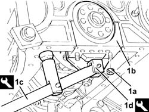
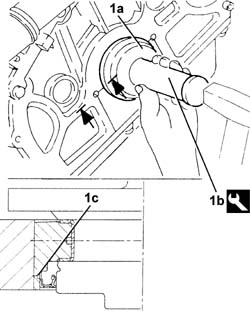
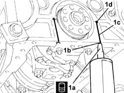

1020D50 crank shaft rear mount - apply silicone to mating surfaces with crank case sump and flywheel removed
- Path
- Procedures > 10 ENGINE > 1020 CRANKCASE SUMP AND COVERS > 1020D oil seals on crank shaft > 1020D50 crank shaft rear mount - apply silicone to mating surfaces with crank case sump and flywheel removed
- Kind
- repair procedure (removal / refitting; the operation number is the code)
- Applies to
- engines: 2.5 V6, 3.2 V6; all production periods
- Interactive page
- https://sloeber94.github.io/elrnDB-a156/en/#/3237478
Applies to: engines: 2.5 V6, 3.2 V6; all production periods
 Removing
Removing
 Refitting
Refitting1. Undo the nuts (1a) and remove the rear main bearing cap (1b) using the tools (1c) and (1d).
 | Name | Country |
|---|---|---|
1c | Lever | 1.821.006.001 |
| Name | Country |
|---|---|---|
1d | Extractor | 1.821.006.002 |

Applies to: engines: 2.5 V6, 3.2 V6; all production periods
Remove the half-bearing.
Remove the rubber seals (only for cars up to engine no. 00708).
Remove the crankshaft rear oil seal.
Applies to: engines: 2.5 V6, 3.2 V6; all production periods
Refitting
RemovingThoroughly remove the sealant residues from the rear bearing cap seat, the small holes and the contact surfaces with the oil sump (only for car after engine no. 00709).
Thoroughly remove all traces of engine oil using heptane or a similar solvent.
Fit the rear bearing cap complete with bearing half-shell and secure it, tightening the nuts to the specified torque using the specific tool for angle tightening.
 | Fastening | Component | Ø | Value (daNm) |
|---|---|---|---|---|
- | Nut | MAIN BEARING CAPS | M12 | (Engine crankcase side) 2.5 + 79° |
| Name | Country |
|---|---|---|
- | Protractor | 1.860.942.000 |
1. Fit the crankshaft rear oil seal (1a) using the tool (1b).
| Name | Country |
|---|---|---|
1b | Fitting tool | 1.821.150.000 |

Applies to: engines: 2.5 V6, 3.2 V6; all production periods
1. Apply the recommended sealant (1a) through holes (1b).
 | Type | Component | Name | Qty. |
|---|---|---|---|---|
1a | Sealant | ENGINE REAR MOUNT GASKETS | LOCTITE 5900 | - |

Applies to: engines: 2.5 V6, 3.2 V6; all production periods